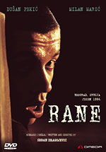

Ране је српски филм снимљен 1998. године у режији Срђана Драгојевића. Главне улоге тумаче Душан Пекић и Милан Марић Шваба.
 Филм је посвећен генерацијама рођеним после Тита. Базиран на истинитом догађају, филм прати судбину двојице дечака, Пинкија и Швабе, који одрастају на Новом Београду, у периоду 1991—1996. То је време када је земља пролазила кроз материјално пропадање и морални суноврат. Детињство главних јунака детерминисано је санкцијама, близином рата и криминализацијом читавог друштва, који удружени стварају сасвим нов систем вредности. Двојица адолесцената улазе у свет подземља и сањању да учествују у телевизијском програму у којем гостују жестоки момци са улица Београда. Пошто су се окушали у разним облицима криминала, њих двојица заиста доспевају у тај програм. Но, њихов успон у свету криминала прекида међусобни сукоб. Као и многи њихови вршњаци, Пинки и Шваба већ са четрнаест година улазе у свет криминала, прихватајући вредности Србије из тог периода, екс-комунистичке заједнице у хипер-транзицији, која, због рата и санкција, подсећа на театар апсурда. Идоли главних јунака су познати београдски криминалци и ТВ шоу „Пулс асфалта“ који такву фелу људи доводи у госте и ствара од њих медијске звезде. Пинки и Шваба маштају да једног дана гостују у својој омиљеној емисији и труде се, злочинима, да то заслуже. Након што успевају у томе, њихов успон у свету криминала се прекида међусобним сукобом. Шваба испаљује пет метака у Пинкија, несвестан тога да свог најбољег пријатеља рањава у иста она места у која је Христ рањен две хиљаде година раније. Пинки успева да преживи и након извесног времена бежи из болнице, те позива свог пријатеља на помирење. Помирење је више него ужасно - рањени дечак треба свом другу, по неписаном правилу, да направи пет потпуно истих рана како би се пријатељство обновило.